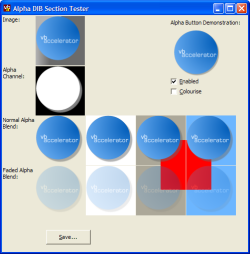

Simple Alpha Sample (26K)
Simple Alpha Sample (26K)
 VB5 Alpha DIB Section Demonstration (101K)
VB5 Alpha DIB Section Demonstration (101K)
 VB6 Alpha DIB Section Demonstration (97K)
VB6 Alpha DIB Section Demonstration (97K)
 13 Jan 2003
13 Jan 2003
First Posted
 Subclassing Without The Crashes
Subclassing Without The Crashes
 Replace one Colour with another in a Picture using BitBlt
Replace one Colour with another in a Picture using BitBlt

Alpha DIBSections
Modify per pixel alpha in a bitmap for drop-shadows and other exciting effects.
This article provides an enhanced DIBSection class which allows you to create and draw images with per-pixel alpha. The alpha component of a pixel allows you to determine how transparent you would like a pixel to be. This concept is being increasingly used in the Windows UI to enhance the user experience with accurately blended drop-shadows and partially transparent objects.
Note that system alpha-blending is not available on Win95 or NT. If you want to display an alpha-image on these systems you have use your own code routine to implement AlphaBlend. Sample code is provided to do this.
Introduction to Alpha
A bitmap consists of a array of bytes which reflect the image colours. In early computer days, little memory was available for the storage of images (in fact, my first computer was so challenged this way it couldn't even fill more than 30% of the display before running out of memory) and so the number of bits allocated to each pixel was reduced. So if you allocate 1 bit per pixel, you can have two colours: on or off. If you allocate 4 bits, you can have 16 combinations, hence 16 colours, and if you allow 1 byte then you can have 256 colours and so on.
Now that memory is cheap, and graphics cards typically have more memory on board than servers which ran an entire department used to have when I was a lad, more memory can be allocated to an image. Psychological studies have demonstrated that the number of colours you require before two adjacent shades with only one-bit change in colour value are indistinguisable is somewhere in the millions. This means that you never need more than 24 bits to store a colour value (24 bits is 16,777,216 different colours), which is why 24-bit displays are often referred to as "True Color". However, computers are typically organised in Word sizes of 32-bits or above. Its easier to access memory when it is aligned to the word size of the computer, since you can read the block in one go. One way of usefully using the additional 8 bits is to store an alpha value. (I would expect bigger graphics colour sizes to appear as computer word sizes increase, perhaps this will allow for more accurate alpha and pixel math).
The idea of an alpha channel is it stores how transparent a given pixel should be, from 0 (completely transparent) to 255 (completely opaque). Once this concept is in place it becomes easier to create much more sophisticated displays, in particular it allows for colour-accurate drop-shadows and smoothing of anti-aliased edges against any background.
The GDI Alpha Functions
Whilst GDI has supported 32bit DIB Sections for some time, it was not until "MsImg32.DLL" was added to the OS in Windows 98 and 2000 that there was any built-in support for actually drawing an image and applying alpha. Similar functionality is also provided through the Layering API functions, although these do not appear in 9x systems.
MsImg32.DLL introduces a function for drawing bitmaps with alpha channels, called AlphaBlend. There's also a TransparentBlt function that works the same as >BitBlt but allows you to specify the colour that should be rendered transparently, although doing that is fairly easy using Raster Operations. (TransparentBlt also has a terrible GDI leak under Win9x/ME. How rubbish is that? Avoid it at all costs.)
AlphaBlend can basically be used in two ways:
- Drawing an entire bitmap with a constant alpha (transparency).
- Drawing by merging individual alpha pixel components in the source or destination.
Drawing Bitmaps With Constant Alpha
This way is the simplest, and is demonstrated in the "Simple Alpha Sample" download. To draw a picture with 50% transparency over another, just start a VB project, add two PictureBoxes, set AutoRedraw to true for each and place images into them. Then add this code:
Private Type BLENDFUNCTION
BlendOp As Byte
BlendFlags As Byte
SourceConstantAlpha As Byte
AlphaFormat As Byte
End Type
' BlendOp:
Private Const AC_SRC_OVER = &H0
' AlphaFormat:
Private Const AC_SRC_ALPHA = &H1
Private Declare Sub CopyMemory Lib "kernel32" Alias "RtlMoveMemory" ( _
lpvDest As Any, lpvSource As Any, ByVal cbCopy As Long)
Private Declare Function AlphaBlend Lib "MSIMG32.dll" ( _
ByVal hdcDest As Long, _
ByVal nXOriginDest As Long, _
ByVal nYOriginDest As Long, _
ByVal nWidthDest As Long, _
ByVal nHeightDest As Long, _
ByVal hdcSrc As Long, _
ByVal nXOriginSrc As Long, _
ByVal nYOriginSrc As Long, _
ByVal nWidthSrc As Long, _
ByVal nHeightSrc As Long, _
ByVal lBlendFunction As Long _
) As Long
Private Sub Form_Paint()
Dim lBlend As Long
Dim bf As BLENDFUNCTION
' Draw the first picture:
bf.BlendOp = AC_SRC_OVER
bf.BlendFlags = 0
bf.SourceConstantAlpha = 255
bf.AlphaFormat = 0
CopyMemory lBlend, bf, 4
AlphaBlend Me.hDC, 0, 0, _
Picture1.ScaleWidth \ Screen.TwipsPerPixelX, _
Picture1.ScaleHeight \ Screen.TwipsPerPixelY, _
Picture1.hDC, 0, 0, _
Picture1.ScaleWidth \ Screen.TwipsPerPixelX, _
Picture1.ScaleHeight \ Screen.TwipsPerPixelY, _
lBlend
' Now draw the second picture with 50% transparency over the top:
bf.SourceConstantAlpha = 128
CopyMemory lBlend, bf, 4
AlphaBlend Me.hDC, 0, 0, _
Picture2.ScaleWidth \ Screen.TwipsPerPixelX, _
Picture2.ScaleHeight \ Screen.TwipsPerPixelY, _
Picture2.hDC, 0, 0, _
Picture2.ScaleWidth \ Screen.TwipsPerPixelX, _
Picture2.ScaleHeight \ Screen.TwipsPerPixelY, _
lBlend
End Sub
The download also demonstrates how to do this without using the AlphaBlend function with the cAlphaDibSection class. This would be useful if you're trying to implement drawing with Alpha on pre Win98 or NT systems.
Drawing Bitmaps with Per-Pixel Alpha
If you have a bitmap with an alpha-channel, that is, 32 bits/pixel, then you can draw the picture using the alpha contained within it quite easily. There is only one catch, which is an annoying element of the working with the AlphaBlend function. When you use AlphaBlend to draw bitmaps with individual alpha pixel components, the red, green and blue components must be pre-multiplied with the alpha amount. So if for example a pixel is mid-grey and has a transparency around 25% (alpha = 64), then rather than the values being:
Red = 128 Green = 128 Blue = 128 Alpha = 64
The values actually need to be:
Red = 128 * (64/255) = 32 Green = 128 * (64/255) = 32 Blue = 128 * (64/255) = 32 Alpha = 64
See the MSDN documentation for BLENDFUNCTION and the related code sample "Alpha Blending a Bitmap". The other minor issue is that you have no way of changing the alpha channel; this may or may not be a problem depending on what you're trying to achieve.
Assuming you have a bitmap in the correct format (alphalogo.bmp in the main download is suitable for this) then the simple way to draw it is as follows. To run this you need to create a PictureBox on the main form with AutoRedraw and AutoSize set True.
Private Declare Sub CopyMemory Lib "kernel32" Alias "RtlMoveMemory" ( _
lpvDest As Any, lpvSource As Any, ByVal cbCopy As Long)
Private Type BLENDFUNCTION
BlendOp As Byte
BlendFlags As Byte
SourceConstantAlpha As Byte
AlphaFormat As Byte
End Type
' BlendOp:
Private Const AC_SRC_OVER = &H0
' AlphaFormat:
Private Const AC_SRC_ALPHA = &H1
Private Declare Function AlphaBlend Lib "MSIMG32.dll" ( _
ByVal hdcDest As Long, _
ByVal nXOriginDest As Long, _
ByVal nYOriginDest As Long, _
ByVal nWidthDest As Long, _
ByVal nHeightDest As Long, _
ByVal hdcSrc As Long, _
ByVal nXOriginSrc As Long, _
ByVal nYOriginSrc As Long, _
ByVal nWidthSrc As Long, _
ByVal nHeightSrc As Long, _
ByVal lBlendFunction As Long _
) As Long
Private Sub Form_Load()
Set Picture1.Picture = LoadPicture(App.Path & "\alphalogo.bmp")
End Sub
Private Sub Form_Paint()
' Draw a red background to demonstrate the alpha blend under
' the shadow:
Me.Line _
(8 + Picture1.ScaleHeight \ 2, 8 + Picture1.ScaleWidth \ 2) - _
(8 + Picture1.ScaleHeight * 3 \ 2, 8 + Picture1.ScaleWidth * 3 \ 2), _
RGB(255, 0, 0), BF
' Now draw the image using per-pixel alpha values:
Dim lBlend As Long
Dim bf As BLENDFUNCTION
bf.BlendOp = AC_SRC_OVER
bf.BlendFlags = 0
bf.SourceConstantAlpha = 255
bf.AlphaFormat = AC_SRC_ALPHA
CopyMemory lBlend, bf, 4
AlphaBlend Me.hDC, 8, 8, _
Picture1.ScaleWidth \ Screen.TwipsPerPixelX, _
Picture1.ScaleHeight \ Screen.TwipsPerPixelY, _
Picture1.hDC, 0, 0, _
Picture1.ScaleWidth \ Screen.TwipsPerPixelX, _
Picture1.ScaleHeight \ Screen.TwipsPerPixelY, _
lBlend
End Sub
If you actually want to create your own alpha images, or modify their alpha as the application runs, then you need a more powerful structure. The cAlphaDibSection class provided with the downloads enables this.
cAlphaDibSection
The cAlphaDibSection class provides a wrapper to a 32-bit DIB section which you can use to create, draw and manipulate per-pixel alpha images at will. The methods and properties of this object are the same as the cDIBSection class, except an AlphaPaintPicture method has been added to allow you to draw the picture with Alpha-blending.
As an example of how to manipulate an image using this wrapper, here's a function which will take a VB StdPicture as input and return a version of it which fades to transparency towards the right-hand side:
Private Declare Sub CopyMemory Lib "kernel32" Alias "RtlMoveMemory" ( _
lpvDest As Any, lpvSource As Any, ByVal cbCopy As Long)
Private Type SAFEARRAYBOUND
cElements As Long
lLbound As Long
End Type
Private Type SAFEARRAY2D
cDims As Integer
fFeatures As Integer
cbElements As Long
cLocks As Long
pvData As Long
Bounds(0 To 1) As SAFEARRAYBOUND
End Type
Private Declare Function VarPtrArray Lib "msvbvm50.dll" Alias "VarPtr" (Ptr() As Any) As Long
Public Function GetFadedPicture( _
ByRef pic As StdPicture _
) As cAlphaDibSection
Dim c As New cAlphaDibSection
c.CreateFromPicture pic
Dim tSASrc As SAFEARRAY2D
Dim bDibSrc() As Byte
' Get the bits in the from DIB section:
With tSASrc
.cbElements = 1
.cDims = 2
.Bounds(0).lLbound = 0
.Bounds(0).cElements = c.Height
.Bounds(1).lLbound = 0
.Bounds(1).cElements = c.BytesPerScanLine()
.pvData = c.DIBSectionBitsPtr
End With
CopyMemory ByVal VarPtrArray(bDibSrc()), VarPtr(tSASrc), 4
Dim x As Long, y As Long
Dim lAlpha As Long
For x = 0 To c.BytesPerScanLine - 4 Step 4
For y = 0 To c.Height - 1
' set the alpha: 255 at the left, 0 at the right.
' use a long so we can premultiply without overflow.
lAlpha = 255 * (1 - x / c.BytesPerScanLine)
bDibSrc(x + 3, y) = lAlpha
' pre-multiply the R,G,B components by the alpha:
bDibSrc(x, y) = bDibSrc(x, y) * lAlpha / 255
bDibSrc(x + 1, y) = bDibSrc(x + 1, y) * lAlpha / 255
bDibSrc(x + 2, y) = bDibSrc(x + 2, y) * lAlpha / 255
Next y
Next x
CopyMemory ByVal VarPtrArray(bDibSrc), 0&, 4
Set GetFadedPicture = c
End Function
Code to use it would be something like this:
Dim myPic as StdPicture
Set myPic = LoadPicture(App.Path & "\anyImage.bmp")
Dim c As cAlphaDibSection
Set c = GetFadedPicture(myPic)
c.AlphaPaintPicture Me.hDc, 0, 0
About The Demonstration Project
The demonstration project shows how to create a per-pixel alpha image at run-time from an image and a mask, and demonstrates displaying it over various backgrounds and with differing amounts of overall transparency. There is also a sample of a button type control which uses the alpha-channel information within the DIB to determine whether the button has been hit, as well as how to create a disabled image or to change the colour theme of the bitmap at runtime.